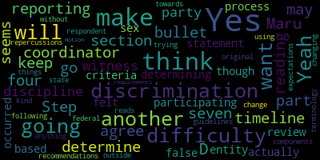

[Graham]: in the interest of time, get going through this meeting. So we do have a quorum, so I think we can start. I will read the agenda and then we can call the roll. Please be advised that on October 28th at 5 p.m., there will be a special meeting of the Medford School Committee to be held remotely via Zoom. This meeting is being recorded. The meeting can be viewed live on Medford Public Schools YouTube channel through Medford Community Media on your local cable, which is Comcast Channel 9, 8 or 22 and Verizon Channel 43, 45 or 47. The meeting will be recorded. Since the meeting will be held remotely, participants can log in by using the following information. The meeting ID is 917-5576-1532. Questions or comments can be submitted during the meeting by emailing medfordsc at medford.k12.ma.us. And those too many questions must also include the following your first and last name, your Medford street address, and your question or comment. Uh, member Rousseau, if you could call the roll.
[Ruseau]: Certainly. Uh, member Brantley, I believe member Graham here, member and Tapa absent member Olopade here. Member Reinfeldt here. Members, so present Maryland, okay.
[Graham]: So for president and three absent, um, if we can all please stand to salute the flag, I pledge allegiance to the flag of the United States of America and to the Republic for which it stands one nation under God, indivisible with liberty and justice for all. Um, okay. Our agenda today is long and short. We have one item on the agenda, that's the short part. The long part is that it is the first reading of Policy ACGB Title IX Sexual Discrimination Grievance Procedure Resolution 2024-38 offered by Member Rousseau. Member Rousseau, before we Dive into reading this 18 page policy, did you want to give us. Um, uh, some headlines about what this policy is all about.
[Reinfeld]: Sure, it is really hard to just to know we have another member online now.
[Ruseau]: Thank you. So this is a very long policy. I would never draft a policy of this length. It's so long that we might be the only people to ever read it. But this came from our professional association and came down from a set of lawyers that they contract with regarding Title IX changes. Title IX has sort of been batted back and forth through each of the administrations that we have had White House. So this is the Biden version. Hopefully, we don't have to go through all of this again in the next couple of years. So this is one of many policies that we have been going through related to Title IX. This is the grievance procedure. So anybody who wishes to file a grievance through Title IX would follow this procedure. There is a lot of preamble. And then there are step-by-steps, who has what rights and when. And I will admit that I lack knowledge about prior versions of this. So I can't really speak to what changed. I don't know, Ms. Bowen, if you, I didn't even ask you, but is there any big, giant change that you feel? Or is it just such a wholesale change that you don't?
[Bowen]: I think most of it is like the scope of the sexual discrimination and sex-based harassment. So it's very clearly defined in that. And also just bits and pieces here and there about the process, how that is different. Witnesses, there was a part in here previously about like being able to question the accuser. And so they've changed a lot of those types of language and processes. But it mostly was just about the sex discrimination and sex-based harassment that they really clearly defined, I feel.
[Ruseau]: Great. Thank you. So not having the knowledge of the previous one, it sounds like really fleshing out the areas where there was always litigation, because it's like, well, what does that really mean? That's good news. That's good news. If we have an update of this size, it's good to see that. Hello, member of family. So, I mean, I attempted to do an AI summary and I failed because this is too big for the free AIs to ingest. And I wasn't about to pay for a AI subscription just to be able to do it on this one giant policy. So, I mean, we could go through it page by page or section by section and just like this is what this section means. I personally have a strong dislike of the idea of reading it because I did time it if we were to have a Siri or AI read us the policy. It's an hour and 27 minutes just without us stopping or having questions. And that was with a pretty fast voice. So I'm hoping nobody here is desiring that we do that. But the other thing I We'll know in the policy, and this is something new. I've never put this in a policy before. At the very end, there's a statement that I think we might want to put into other policies. It says, updates to contact information of school staff identified within this policy may be made without school committee notification. So I think it's bad form to have in your policies, like the names and phone numbers of individuals. But in this case where it's sort of part of the point of the policy is that that's all there. I thought this was a good workaround. So we are not reviewing this policy every single time a staff member retires or we hire somebody new. But that's sort of the outlier for how the policy language is drafted. So that's the 10-mile diversion.
[Graham]: Is there a motion to waive the reading?
[Ruseau]: I'll make that motion.
[Graham]: So a motion to waive the reading by Member Rousseau. I'll second. Seconded by Member Brandley. Roll call.
[Ruseau]: Member Brandley?
[Branley]: Yes.
[Ruseau]: Member Graham?
[Graham]: Yes.
[Ruseau]: Member Ntapa is presently absent still, I think.
[Olapade]: Yes. Yes. Yes. Yes. Yes. Yes.
[Ruseau]: Yes. Yes. Yes. Yes. Yes. Yes.
[Graham]: Um, so remember, so I think it probably makes sense to go through this like chunk by chunk and just ask for folks to let us know if they have questions or comments, um, about that as we go through. And then once we, um, go through that, we can sort of see where we land and decide, you know, if there's another motion to entertain, um, whether to pass this or, or, um, pass it on to another meeting or, um, take care of waving, reading both readings here tonight. So before we.
[Reinfeld]: Before we go, yes, can I ask, so this seemed to be, when I went through it, very much aligned with the notes that came out of Department of Education and this fact sheet, the final rule fact sheet that has kind of the key components. So I'm wondering how much of this is the language that was already recommended versus specific to Medford, because I think I am confident that in having a policy that complies with federal law, We shouldn't be debating a lot of those things.
[Graham]: Remember so.
[Ruseau]: Yes, it is. So that that language went to the lawyers I forget the law firm that ma SC uses, and they. expanded upon and translated it as much as was actually needed. I didn't read the DESE, I mean, not the DESE, the Department of Ed Language. So if they simply copied it and stuck their name on it, I wouldn't know. But yeah, this is, I did not make changes other than updating the contact information, replacing the district with Medford. And I also, there were a few places of punctuation and, Frankly, there were some typos. But so other than that, I did not change the content. Although, of course, malegal perspective, a comma can matter. I was very cautious. And I use Grammarly. Grammarly has a lot of recommendations to make this thing better. I did not take any of them other than where a comma was necessary or not necessary. It was clearly just a mistake in the drafting of the language. I really didn't like the format. There's so many levels. But again, I felt uncomfortable really making a big change because it did come from lawyers and because Title IX is such a gigantic, complex thing that I don't fully understand. That's where we're at.
[Reinfeld]: Great, so I think going through it piece by piece and maybe having member Russo and Ms. Bowen provide a little bit of the guidance of this is what this is doing here or how it plays out would be helpful.
[Ruseau]: So would you like me to share the screen?
[Graham]: It'd be great.
[Ruseau]: Okay, I think that's a good idea.
[Graham]: And then let's, we can start at the top. There is a preamble that goes on for several pages. So up until page halfway down page five is a preamble that, um, in my reading describes like what the intention of the policy is and why it was, um, built in the first place. So I will, um, open the floor to any questions about the preamble.
[Ruseau]: Just realize you can't see me shaking my head probably because I have this text up. I don't have anything on the preamble.
[Graham]: Hearing and seeing no questions on the preamble. The next section is definitions.
[Reinfeld]: And I know it was what we what we were just looking at was the preamble. There's one piece that says sex discrimination that right there where your mouse was prohibits sex discrimination. Should that be sexual discrimination? You know, Everything else is really consistent and then I didn't know if that was just left in as sex discrimination, but I promise I'm not, this was the only place I got that detail.
[Ruseau]: Interesting that. I can search. I'm searching too. Okay, so there's 26 instances of the words sex discrimination.
[Reinfeld]: I'm not inclined to go in and
[Ruseau]: And there's 43 of sexual discrimination. I will say that it is not the only thing in this document that I have similar concerns about. But I don't actually know technically if there are differences between the two. They seem like the same thing to me.
[Reinfeld]: My sense was that sexual discrimination was the term that was being used to cover all of these things laid out here, plus sexual harassment.
[Ruseau]: So I mean, I'm fine with a fine and replace sex discrimination with sexual discrimination if nobody has any reason to disagree with that.
[Graham]: And this is, I guess my only thought is, that we're not changing anything of substance, but we might be if we make this change, right? If we're not intending for it to be substantive, but it would be unbeknownst to us. So I would advocate that we leave it alone. I agree. OK.
[Ruseau]: All right. We will completely mess up the formatting to add a few characters anyways.
[Graham]: Okay, so about halfway down page five, we start with definitions. And it looks like they go to page eight, halfway down page eight.
[Ruseau]: Member Graham, are you looking at the agenda?
[Graham]: Yes, I am looking at the agenda. I'm sorry. That's okay.
[Ruseau]: So I'm on page three to page... Six. Six. Thank you. Yes. Yep. Again, definitions, I don't think they're particularly consistent, but I don't want us to have to engage lawyers.
[Graham]: Questions about the definitions? OK. The next section is about reporting sexual discrimination. and filing a formal complaint. So that goes on for several pages.
[Ruseau]: So I could just kind of give like quick go through the steps process real quick? Sure, that would be great. So starts out with who may file reports, and it's anyone, which I think is interesting. It doesn't have to be the victim or whatever the proper term isn't, according to the definitions. How to report the discrimination is in the These are not steps. Sorry. Again, this organization of this document was a challenge. There's internal reporting that's related to employees. Next is the district response to the report, which, of course, the district will respond. There are five things that the district will do promptly and confidentially, contact the complainant, inform the complainant of supportive measures, consider the complainant's wishes. I don't really know what the point of number four is. And then, The complainant will have, it will be explained to the complainant what the process is for filing the complaint. Next we have filing itself. So this is the actual process. Who may file it? A much longer version. This document is very good at repeating itself. So a much longer version of who may file the process again. in longer words, more words. Did it say step one somewhere? It did, I apologize. Step one. So step two is the consideration of supportive measures. So the complainant and the respondent. Step three is written notice of the allegations.
[Reinfeld]: Is there a definition of the word consider? Because it's not offer. It's not, like, I suspect that is one of those words that is legally, it means one thing in legal terms and the other.
[Ruseau]: For the rest of us.
[Graham]: Not in the policy that I can see. Yeah.
[Reinfeld]: Nope. Versus offering those supportive measures. Like, I feel like that's implied here, but it isn't explicit.
[Ruseau]: Yeah, there was a section up here about, what was it? Was it up here?
[Olapade]: So if you go up to the part D of the reporting section of discrimination.
[Reinfeld]: It's provided.
[Olapade]: Yeah, bullet four. which I agree with Maru, so that doesn't make, how do you determine?
[Reinfeld]: That says if you're not providing supportive measures, you have to say why. Like we went straight to disciplinary action for these reasons. There was an imminent danger. This was not a safe environment in which to offer this supportive measure. I understand that. It's the non-punitive.
[Ruseau]: Shall I continue?
[Graham]: Yeah.
[Ruseau]: I think the hard thing is, of course, thank you. I think the hard part is, of course, without specific examples, it gets really, this is not easy stuff to draft. Okay, so those are the written notice, what will be included in the notice, there will be a statement for evading retaliation, of course, submitting false information, all the things you'd expect. Step four is the consideration of whether to dismiss the formal complaint. So there are some mandatory, yes.
[Branley]: On section three, number seven, just need a capital on that.
[Ruseau]: Thank you so much.
[Branley]: Thank you.
[Ruseau]: Even Grammarly didn't notice that.
[Graham]: It also doesn't want to read 18 page prophecies.
[Ruseau]: Thank you. So yes, step four is about whether or not the complaint is subject to mandatory discretionary dismissal. So if the district cannot identify the. Respondent. which is often known as the accused in regular language, then of course there's no way to further deal with the complaint. There is may dismiss, these are the may dismiss. So if the person is not involved in their educational programs and is not involved with the district, we may dismiss, not to say we have to, if the complainant voluntarily withdraws. So then there's more stuff about dismissal. So it's really hard to summarize without just reading it, but I'm not reading it. If the dismissal is appealed, the district will do a set of things, notifying all the right people. When the complaint is dismissed, the district will at a minimum offer supportive measures. Respondent will be notified of the allegations and supportive measures will be offered there as well. Why is this underscored? Okay. And then, yeah, so let's see. And there's more just dismissal. A lot of stuff, but- Six is really important there. Okay, so let me read that one since I can't remember it. Dismissal of a formal complaint for purposes of Title IX nominal exclude the district from addressing allegations under any other relevant district policies or procedures, including but not limited to the civil rights grievance procedure, the bullying prevention and intervention plan, that thing, the student code of conduct and or collective bargaining contract, nor will it preclude the district from addressing the allegations pursuant to the grievance process in section two of this procedure. The Title IX coordinator shall have the discretion to make any such referrals and proceed as appropriate in regard to the allegations. So just because a dismissal within this final line has happened, that doesn't mean it's the end, necessarily.
[Reinfeld]: This may not qualify for this type of measure, but it could still be a violation of other.
[Ruseau]: Thank you. Next step five is the initial inventory deletion. This is the details on what the district will do. Standard of proof. The burden is on the district. Collection of evidence. Let's see. Presentation of witnesses. We'll have no, there'll be no gag orders. Each party will have one advisor. written notice to seek privacy medical treatment. So the district cannot access medical information in any situation here. Unless of course they can unless they consent to it. the investigator timelines. So speed matters. It always matters to everybody involved in these things. And I think that's one of the changes that did happen that there used to be a 10 day waiting period. Imagine if you're involved in this as the victim or accused or whatever the proper terms here are. And once all the investigations are done, everybody has to sit on their hands for 10 business days. everybody's going to school, everybody's, you know, it didn't make a lot of sense. So I think that was one big change that they made is that that 10 day mandatory waiting period is gone. Let's see.
[Reinfeld]: And we don't have any definitions of what a reasonable timeframe is.
[Ruseau]: No, I don't. No, we don't. I mean, I think that for minor things, I think everybody would think reasonable is, you know, same day, a day or two, but for major, major things, I can certainly see it taking many days or longer once there's lawyers and, you know, all kinds of other things involved.
[Reinfeld]: But there's separate language for acknowledgement of the receipt of the complaint.
[Ruseau]: Then there's, this is the opportunity for parties to access and respond to the evidence. The evidence, there's limitation in here. So we have to redact confidential information not directly related to the allegations. FERPA is very much still in effect here. This is an override FERPA. And for anybody in the public that wants to know, that's the Family Educational Rights and Privacy Act, which is, you'll hear school committee members use it when we respond to you about why we can't actually do things you ask us to do sometimes. And everybody is prohibited from disseminating any of the evidence for any purpose not directly related to the grievance procedures. So don't take it and go to Facebook or anything. It is evidence that you have the right to see, but you do not have the right to disseminate.
[Reinfeld]: Remember, Randall wants to say something. I do. So this is the section where I had a lot of questions, and I think it comes up in the bullying policy as well. If there are more than two parties, if we're talking about a group, like a team of people or multiple staff. I think there's a lot of confusion on what gets investigated on a person by person basis versus people as a group talking amongst themselves. If you have a group of students who is either filing a complaint or is being Or is the respondent or respondents, whether they're getting individual, whether all of these words, multiple things happening simultaneously versus. An investigation into a group situation, and that's not really addressed, and I don't know. if there's guidance there. Obviously, I can try to talk to lawyers about that, but I don't know how that works in some of our other policies, because I know there has been a lot of concerns where I was told one thing and I was told another, and then parents start sharing with each other around the same situation, and there's just lots of conflicting information.
[Graham]: Can you give us an example? Like I'm not tracking like a group. If a group does something, it's because individuals in the group did something, right?
[Reinfeld]: Yeah. So I have examples that aren't Title IX specific. Is that? Sure. Okay. So for example, a group of middle schoolers is caught with vaping supplies. And each student is being, the investigation is happening individually with those students, but the outcomes of those end up being different. And so the parents, you know, suspension might happen. One student is suspended, another one isn't. parents are comparing notes. And they're saying, this is what the administration told me. Oh, well, this is what they told me. And I can't release information about this other student. But the parent has given me this information. And I want to bring that as part of my complaint, because my kids were together. Our kids were together. Is that helpful?
[Ruseau]: I think it's a little helpful. I don't know, Ms. Bowen, if you have any thoughts on that.
[Graham]: I mean, I think in the end, like, the district can't. Like, they can't broadly meet out. Consequences, like, they have to do that specifically and individually. Right? So I could see why a parents would.
[Reinfeld]: Do that or want to know, like, what else is there's a video, the reviewing of evidence, like, there's a there's a video of something that happens and. 1 complaint complainant can't review a video because it contains footage of another complainant, for example.
[Bowen]: Must be when. So I mean, I think it's not, so the consequence wouldn't necessarily be one size fits all. I think when we start doing these investigations, we find out more information and then apply what the discipline would be or what sort of restorative circles or supportive measures would be. But I think it's, like finding out what each student's specific role was, you know, like in regards to vaping, maybe the student that brought all the vapes in might have a heavier consequence than a student that just took one. So I think it's really doing a deep dive into all the information and then looking at what is going to be the best line of you know, how do we handle this with each student? And we can have conversations with parents, like, your child's role was a little bit different and this is why the consequence was a little more severe or was not as severe, if that makes sense.
[Graham]: So, Member Reinfeldt, as it relates to a Title IX investigation,
[Reinfeld]: Right, if there is collective bullying for a group of LGBTQ students or the school say, I don't think this is going to happen, but school is not providing adequate pumping space for new parents. and we as a group want to file a complaint. Can we as a group file a complaint or does it have to be a series of individual complaints?
[Bowen]: I think it could be a group complaint. And then it may separate into more individual investigations. But if there are, say, four women who don't feel like the accommodations are appropriate and they file together, then we would look at it and as a group, look at a solution for them. So that would be a little bit different, I think, than, say, a bullying or sexual harassment. like a group response to that. I think it's looking at each individual's actions and part of, say, a sexual harassment complaint, and then going from there. They vary so widely when things happen. So it's really hard to give a if-then sort of answer because we, it's really, really, you never know, like once this complaint comes in and you start to do the investigation, it takes a life on its own and it does involve more people. So it's like really doing that due diligence and looking into it and then going from there. And then, you know, what are the ramifications for the students? Do we discipline them? Do we not? Do we say like, we work with the parents about maybe they need some social skills groups or counseling in school or whatever it may be. So I think it's really hard to say we're gonna do this if this happens, because when we're in the midst of the investigation, we're seeing a lot more things come to light, either for the positive or for the negative.
[Ruseau]: And I just want to jump in here also that this is the scenario given there has to be a victim. So a bunch of students getting in trouble for vaping is not Title IX. Even if we decided we were going to say just the girls are going to get in trouble and not the boys. The victim where who's the victim the district enforcing a policy. We're taking action is we, I suppose we could be the perpetrator. as a district, but I don't think this policy considers that the district is actually a perpetrator in violation. I mean, obviously plenty of Title IX things are about the district refusing to, you know, deal with sports and all the other types of things, but there are victims there.
[Reinfeld]: Yes, the sports scenarios are coming to mind, and I'm trying.
[Ruseau]: Yeah.
[Reinfeld]: To note that, I mean, we are in a public meeting and so.
[Ruseau]: Yeah, so let me find what page we're on since I've already.
[Reinfeld]: Yeah, we were on page nine.
[Olapade]: Step seven, if you keep going down further.
[Ruseau]: Oh, thank you. Glad somebody's paying attention to that. Okay, so yeah, all right, so let's see.
[Reinfeld]: Oh, and I see, yeah, for any purpose not directly related to this grievance procedure. So if there is a interconnected investigation that remains within the single grievance or, okay, thank you.
[Ruseau]: You're welcome. So next up is step seven, completion of the investigative report. Then eight is the parties opportunity to respond to the report. Step nine is directed written questions from the parties. So after the investigative report has been sent to the parties, but prior to reaching a determination regarding responsibility. The decision-maker shall afford both the complainant and the respondent the opportunity to submit to the decision-maker relevant questions of the other party or any witness, provide the party with the other party's and our witnesses' written responses to said questions, and allow for additional limited follow-up questions from each party in writing. Questions that seek disclosure information protected under legally recognized privileges, such as FERPA, will, shall not be permitted unless the person holding the privilege waives their right. So this is, seems pretty standard, not as awful as an actual deposition, but. So, So there is this 10 days to submit directed relevant questions. So again, this is still 10 days. There was that other 10 days on top of that 10 days. It would be hard to feel like things are being taken seriously if we just keep adding two week increments. So let's see. So 10 days to craft your questions, five days to get before your answers are due, another three days, and then another three days. It's really, it's no wonder things take forever, but they have to. I mean, everybody has to do the work and have their rights protected. Let's see. And then step 10 is determination of responsibility. Findings are backed by the decision maker. Who's on this call? Joan is. Oh, did Joan? Did we just lose Joan? I think we did. Oh, no, there you are. Sorry. She's here. She's here. You moved to the top for some reason on my screen. Standard of proof, decision makers' findings, The determination will be written, of course, and sent simultaneously to both parties. There's some more very long time frames here. Section C, remedies. So this is what can be done. So there's the remedies, the elimination of the harassing environment, Next is section D, page will be on 15. Persons doing discipline. So this is about discipline, as you would imagine. However, there is a reference to the two Massachusetts general laws related to behaviors that are attributable to disabilities. We'll go into those, because those stand alone. So then there's the imposition of sanctions. Compliance with the imposition of the sanctions. Okay, so this is sort of important. So, you know, if there was a determination that it had not happened, or that it was not, sorry, not that it had not happened, that it was not considered, am I misreading this? So what does the sentence, this one mean, do you know?
[Bowen]: I would say it means that if they make a false statement. Hold on, let me read this again.
[Ruseau]: Yeah.
[Olapade]: If I may, it seems like it's reading as if the timeline coordinator will not discipline a party witness or other participating entity if they make a false statement about sex discrimination, or if they felt as though it was, but it was not actually based off of the determining criteria after a review process had occurred. So there will be no repercussions towards the original respondent. I think is how it reads.
[Bowen]: Okay.
[Ruseau]: Does that sound right to you, Jo?
[Bowen]: Yes. Thank you.
[Ruseau]: Okay. Thank you.
[Bowen]: Hi.
[Ruseau]: Lawyers, do you know how to make it hard?
[Reinfeld]: And this might've been the previous section, but so there's this timeline talks about the elimination of conditions once the determination has been made. It doesn't, this policy doesn't seem to say a lot about while the investigation is going on, making sure things are safe.
[Bowen]: So those would be the supportive measures that you offer?
[Reinfeld]: Okay, in advance.
[Bowen]: Yes. Yeah.
[Reinfeld]: Okay, great. Thank you.
[Ruseau]: And Ms. Bowen, correct me if I'm wrong, but supportive measures could be quite substantial. Like if we felt the student couldn't be in the building, we would be offering them another option for how to get an education outside of the building. It's not that they just get to come to school and we're like, be nice. That's not what we mean. It could be something as significant as that, correct?
[Bowen]: Correct, and if it was a staff member who made a complaint that they were being sexually harassed, walking them to the car at night, offering them counseling, that sort of thing. So it's a wide range, but yes, it could be a big supportive measure that we offer depending on the situation.
[Reinfeld]: Does that supportive measure potentially include removal of the respondent or the alleged perpetrator.
[Bowen]: I would have to go back and see, I don't think you can remove until you do the investigation, but you can separate sort of, you know, really close supervision, put in a safety plan, but I would have to go back and I haven't experienced that yet. I hope I don't, but I think you have to make sure that you do the investigation first before you can remove.
[Reinfeld]: Because one of the real challenges of these situations is that a lot of the burden to remain safe is on the victim or alleged victim or complainant. And that can be really hard and further exacerbating of a situation.
[Bowen]: Correct. And I think it's really important that when we have a conversation about the supportive measures, we also can have like counseling staff there with us. The parents can be involved in what sort of protections do we need to put into place? If there's any legal protections that may have to happen as well, like involving the school resource officer and that sort of thing as well.
[Reinfeld]: but like administrative leave can't happen during it. And when does administrative leave?
[Bowen]: If that's the... It could possibly, it could possibly. And that's where we really engage with our attorney to say like, this is what has been reported to us. We're in the process of an investigation. Does somebody go out on paid leave until the full investigation is happening? And that's where we would seek Howard Greenspan's advice on that.
[Reinfeld]: Privacy challenges on both sides are significant. All right. Thank you.
[Ruseau]: All right. Next up we have, did I finish this section? I believe so. Informal process. So there's an option to have an informal process if the So here's the right words to describe the different people here. Oh, one second, Google is, okay. That was crashing on me. So there is an option to have an informal process. Right. Next is section F emergency removal under Title IX. The district may remove a respondent on an emergency basis at any time that the district one undertakes an individualized safety and And risk analysis two determines that an immediate threat to the physical health or safety of any student or other individual arising from the allegations of sexual discrimination justifies removal and that there is no alternative to the respondent's emergency removal to mitigate the threat presented. And three, provides the respondent with notice and the opportunity to challenge the decision immediately following removal. So that's there. Hopefully we never have to use that. Anonymous reporting. So this is that we may take anonymous reports. Let's see, we can do supportive measures. Cannot provide, oh, I'm sorry. Obviously, we can't do supportive measures if we don't know who is supporting, who is reporting. Let's see, that seems, I mean, if we don't know who the reporter is, that's different than confidentially reporting, but there's really not much, there's pretty significant limitations. and what could actually be done. Anybody want to talk about that one at all?
[Reinfeld]: I mean, an anonymous report is not a formal complaint. And I think that's certainly where we've seen in higher education these things come out, is people saying, well, I can't do anything until a formal complaint is filed, and people don't feel safe submitting a formal complaint. whatever it is, but it's this horrible catch 22, maybe not even a catch 22, but a paradox of people just, people need to be good people, but.
[Ruseau]: All right, so next up is appeals. So there's an entire appeals process, of course. Says who to send the appeal to five days after the determination. The decision maker may not take. Sorry, the decision maker for the appeal cannot take part in the event. Could not have taken part in the investigation. So we do have the original policy as I received it had frankly a lot more decision makers that we have decided to go with. We have some freedom and leeway to do that. And I can see both sides of that, but I'll explain that when I get to that section later.
[Reinfeld]: Okay, because I did have a question is we have one appeal officer and what happens if This is purely hypothetical, not based on the individual named, but what happens if the appeals officer is involved in this? There needs to be an alternative.
[Ruseau]: Ms. Bowen, can you answer that?
[Bowen]: So that could be, so the roles can be interchangeable. Like one person could fill all these roles, but if say like John Bruno, who is the appeal officer is involved in the case, then I might be the appeals officer, or we might look at other people like the informal resolution facilitators that they were not involved, that they could make the decision at that point about the appeal.
[Reinfeld]: And I don't know, since you said part of this is about communicating what the avenues are, that was my question here is do we need to communicate that in the event of the designated person not being able to be that unbiased decision maker, these are the alternate paths. It was only because that particular role had one person.
[Graham]: So is your suggestion that there be more than one person listed as an appeals facilitator?
[Ruseau]: Well, I think what I'm hearing Ms. Bowen saying is that, frankly, all these people are interchangeable. So I mean, if John Bruno was involved, then obviously he's not going to be the investigator or the, I mean, you know, that these are all roles that can just be swapped around to ensure that there's not a conflict. I mean, we'd have to list every person under every section. And then the point is sort of that people know who to call. I think if you were concerned about John Bruno as like you're writing a complaint against him, then obviously you're not going to want him to be the appeals officer. He also wouldn't be a very good investigator. And so these are just sort of like defaults is how I take them.
[Reinfeld]: That is how I take them as well. I just was wondering about how explicit we need to be about that. And just since we're in public, I like John Bruno very much. Me too. At my child's school, just not picking on him.
[Ruseau]: Yeah. So where was I on this? Age 15? So let's see, sorry. Okay, so we had finished that section there. Recordkeeping, so obviously just keep records related to this procedure maintained for a period of seven years. I said days, I was confused, years. Pretty much standard stuff. Employment agencies. This is boilerplate stuff. Where to go. Pay is identification of key personnel. So that's this section down here. And the boilerplate code that I originally had had an investigator at each school. I can sort of see the value in that. On the other hand, if somebody's particularly well-trained in that, then maybe they're a better choice. But the other part of that that I was a little bit like, so McGlynn is, of far away from the Missittook. But that means that Mr. O'Brien is going to be doing Title IX investigations over at the Missittook. But on the other side, I also was kind of like, it seems better to have somebody not at your school doing the investigation. So, you know, if we were to do it where we had really, it would have to be an entire table of like, if you're here, this is who you contact. And I think it gets really messy. So I think, you know, Joan's at the top, so Joan's gonna get the calls. So, and this does not preclude an investigator at another school doing it. Right.
[Bowen]: Correct. Yep. I mean, we had two people to administrators that did any sexual harassment complaints. So this has expanded it to a few more roles throughout the district. But yeah, if it's at the McGlynn Elementary School, then we might have Jen Skane or Sheila do it. And it's interchangeable. So depending on the specific situation, we would look at who would be the best person to do the investigation. It might be myself, it might be, human resources might get involved as well. So I do like how we have more people involved.
[Ruseau]: Right? So this prominently displayed on the district website. I don't know if there's anybody who has an idea of what the word prominently displayed means in legalese. I will ask, I'll send an email afterwards to ask that, that if it's not already there that, you know, Joan is listed as the title and coordinator maybe in the about or section or somewhere very prominently. I don't think on the actual main page, just like right there makes a lot of sense, because that gets very much. We want to have the non-discrimination statement. We want to have the district educational statement. It just gets very long. But that's just my opinion. So we are at an hour, and we have sort of been through it. It's a lot to digest. And we will have another chance at a regular meeting when we do the second reading, which we will not read also, hopefully.
[Graham]: Are there any other? questions or changes suggested?
[Reinfeld]: I have been trying to figure out a way to rephrase the phrase victim without their consent because it implies that a victim can give consent up in the definition section, but I haven't settled on anything.
[Olapade]: I think another difficulty is trying to, if there are components of things that we want to change without changing like state or federal guidelines and the terminology that they're using. So I don't want to do anything that's going outside of what their expectations or recommendations are. So we're not kind of following their requirements. So that's another difficulty, I think.
[Ruseau]: Yeah, I mean, You know, whenever I tell people what it's like to be on the school committee, I do talk about that the federal, the state, and, of course, the local, everybody's got their hands in the pie, and nobody talks to each other or cares, frankly, what the other one thinks. So we do end up with definitions that can not only be not consistent, but can even be contradictory. And we're just left to sit in that stew. Yeah, it's tough, especially when you're writing, you know, we write one policy, like the bullying one, which comes from the state house, and we are very specific definitions of, you know, aggressor is the word they use. And then here, there's the respondent, which is like the most mild-mannered version of that probably anybody could ever come up with. So I think we just have to live with the fact that in some policies, we are calling those folks the respondent and other ones that are the aggressor. And I think the state one actually has two different words.
[Reinfeld]: Interpreter, but until it's been proven, they can't put that in.
[Ruseau]: Right. Right. And then, you know, victim isn't even listed in this one as the act in the definition section.
[Reinfeld]: So they do say that alleged victim is a. Yeah. That person, but that's not.
[Ruseau]: Yeah, it's hard and hopefully nobody has to go through any of this, especially if they have to go through it in multiple offices because that would be terrible.
[Graham]: There are a motion to approve the first reading.
[Olapade]: Yeah, I'll make a motion.
[Graham]: Motion to approve the first reading by Member Olopade. I'll second. Seconded by Member Branley. Roll call.
[Ruseau]: Member Branley.
[Graham]: Yes.
[Ruseau]: Member Graham.
[Graham]: Yes.
[Ruseau]: Member Ntuk is absent. Member Olopade. Yes. Member Reinfeldt. Yes. Member Soyes, Mayor Lungokirn is absent.
[Reinfeld]: So does this automatically go to a regular meeting or do we waive?
[Graham]: So five in the affirmative, two absent, motion passes. And I think the question that you have is, does this go, are we waiving a second reading or is this going to another meeting? Is that your question? That is my question.
[Ruseau]: So, um, I know we accidentally did we have 2nd readings 2 meetings ago and then several of us, we already did the 2nd reading. Why is it on the agenda? The 2nd reading has to actually be on the agenda because that's the opportunity for the public to. It's like the 2nd chance it's not for us. It's for the public to be like. Oh yeah, if you're watching the meeting and you see something discussed and you wanna discuss it, you may not be prepared. So the second reading I think should happen at the next meeting. And I will be submitting a clarifying rule update to make that clear, cause it's not clear.
[Graham]: Okay, so the second reading will be on our next school committee agenda, which is a week from today. Are there any other motions on the floor? Motion to adjourn. Motion to adjourn by member Reinfeld. I'm on a second roll. Let's do it. Member Bramley, roll call.
[Ruseau]: Member Bramley.
[Graham]: Yes.
[Ruseau]: Member Graham.
[Graham]: Yes.
[Ruseau]: Member Tapia is absent. Member Olopade. Yes. Member Reinfeld. Yes. Members say yes. Mayor Lando Kern is also absent.
[Graham]: I've been the affirmative to absent. The meeting is adjourned.
|
total time: 6.6 minutes total words: 862 |
total time: 33.42 minutes total words: 4036 |
total time: 9.86 minutes total words: 1318 |
total time: 0.08 minutes total words: 14 |
|
total time: 1.17 minutes total words: 185  |
|||
{kind=link}
{kind=link}
{kind=link}
{kind=link}
{kind=link}